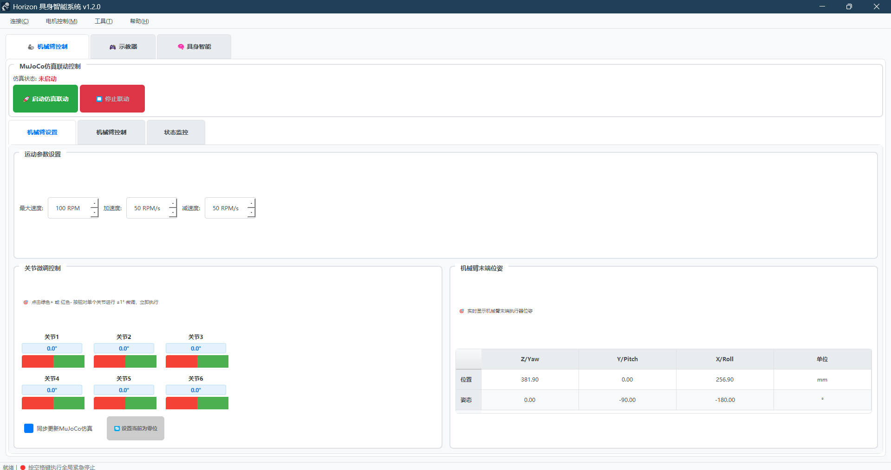

欢迎使用 Horizon_Arm¶
本指南面向最终用户。我们提供简洁的使用步骤与常见问题指引，帮助你快速上手并安全运行。

Horizon_Arm 控制系统界面
快速上手¶
- 启动程序（桌面图标或
python run_gui.py） - 连接硬件（菜单：连接 → 连接电机）
- 选择功能页：机械臂控制 / 示教器 / 具身智能 / 工具
- 安全提示：任何界面按空格触发“全局急停”
功能概览¶
- 机械臂控制：
- MuJoCo 仿真联动（启动/停止）
- 关节微调（±1°）与末端位姿实时显示
- 状态监控页（支持自动刷新频率）
- 单电机循环运动：
- 5 步动作序列，独立的速度/加减速/方向/绝对位置参数
- 动作间隔时间，开始/停止/紧急停止
- 电机参数设置：
- 统一管理 6 个电机的“减速比/方向”，一处设置全局生效
- 连接对话框：
- 支持选择驱动板版本 X/Y，界面自动匹配回零与同步方式
快速跳转： - 机械臂控制 → 用户指南「机械臂控制」 - 循环运动 → 用户指南「单电机循环运动」 - 参数设置 → 用户指南「电机参数设置」 - 连接与调试 → 装配与调试手册
页面导航¶
- 用户指南：一步步完成连接、控制与标定（推荐）
- 装配与调试手册：面向装配/调试人员的操作流程
- 故障排除：连接/控制/相机/软件等常见问题与解决
- 序列号与激活：如何在界面中完成激活与离线使用说明
提示：文档以用户为中心，不涉及内部实现与开发细节。
你可以做什么¶
- 控制机械臂：单电机、多电机同步、整臂控制
- 智能助理：用自然语言让机械臂完成任务（文字或语音）
- 视觉标定：相机标定与手眼标定
常见问题速览¶
- 无法连接电机：检查串口号、波特率（500K）、供电与接线
- 运动方向不对：检查“电机参数设置”中的方向与减速比
- 界面卡顿：降低频率、先在仿真或小角度下测试
更多内容请进入各页面查看详细说明。